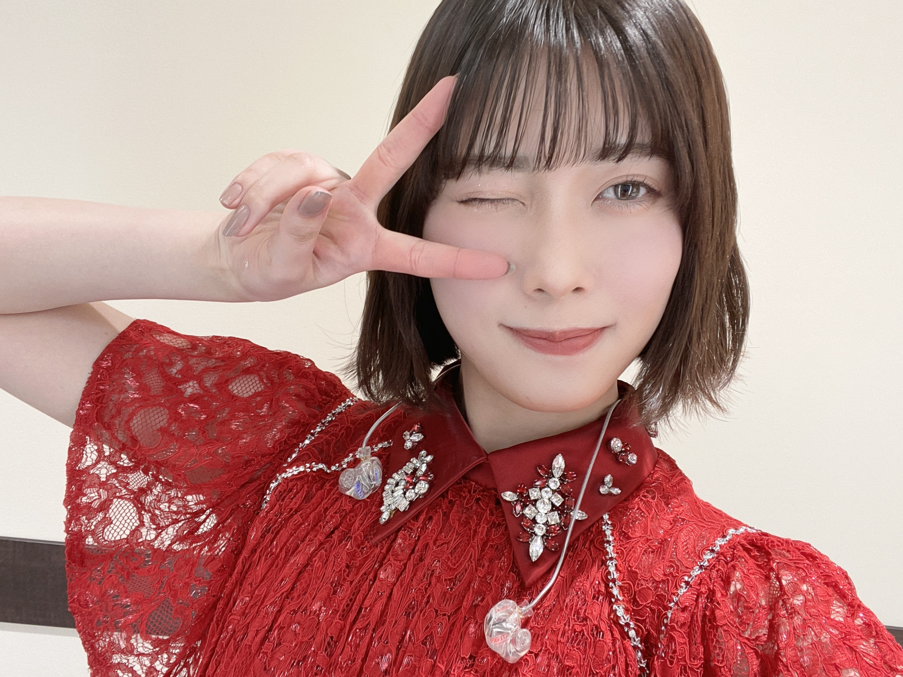
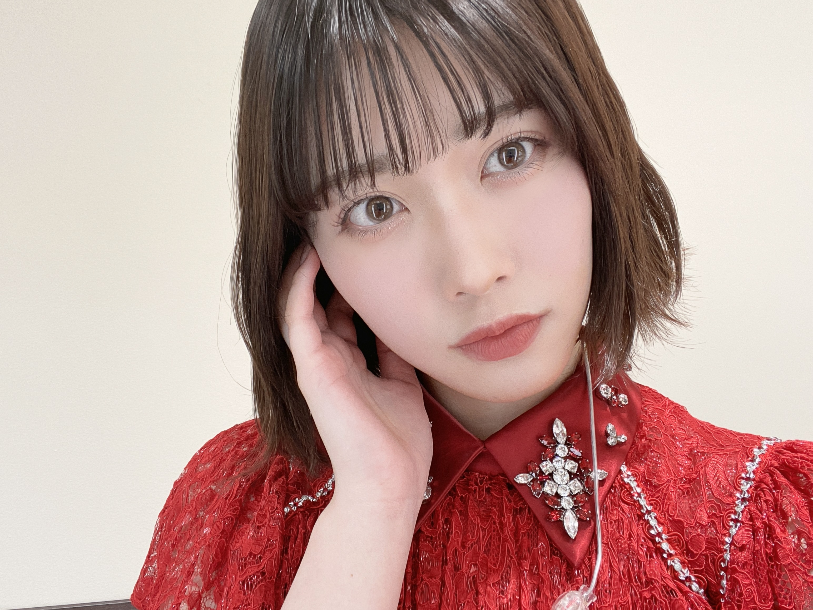
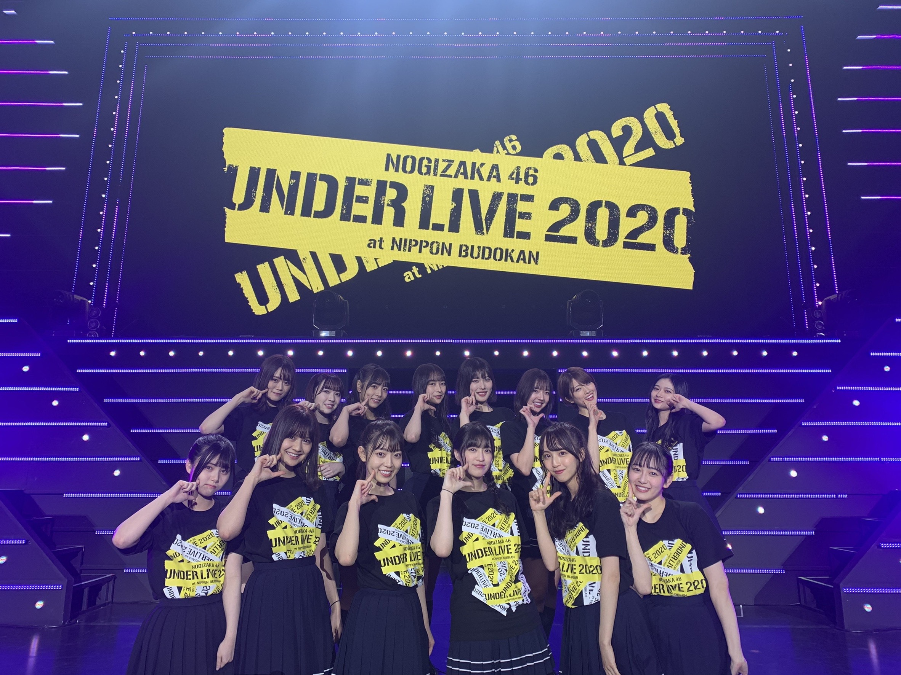
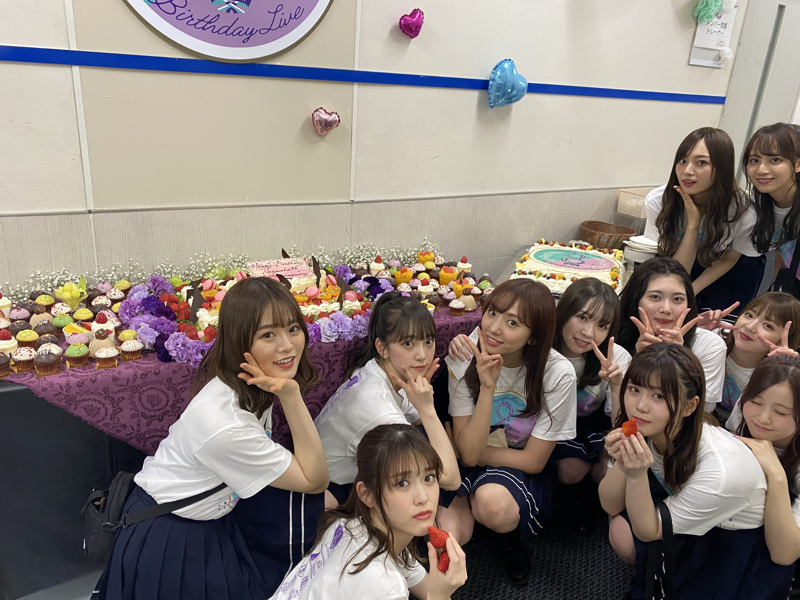

2020/1226Satすてきなみっかかん
こんばんは！
伊藤純奈です


ぴーす！
まず最初に
アンダーライブ2020
無事に終了致しました！
会場に足を運んでくださった
みなさま、配信で応援してくださった
みなさまありがとうございました☺︎
久々にみなさんに直接会うことが
できて本当に嬉しかったです〜
みんな元気そうでよかったあ
感染対策もしっかりしてくださって
本当にありがとうございました！
スティックバルーンでの
応援も嬉しかったよ〜〜
ひとつになれた感じがして
これぞライブ！！ってテンション
あがりました☺︎
タオルやサイリウムありがとう！
後ろの方までみえてたよ〜！！

本当に本当にありがとうございました！
またライブが普通にできる
生活に戻れるようみんなで
気をつけていきましょう...！
お話変わって
じゅんが去年出演してた
舞台「オリエント急行殺人事件」の
再演が明日27日までやっているので
すが、やっと観に行けました！！
じゅんが演じてたアンドレニ伯爵夫人は
松井玲奈さん♡とってもとっても綺麗で
素敵なアンドレニでした〜〜うっとり
しちゃいました。
今でもセリフを結構覚えてて
なんだかうれしかった☺︎
前回共演してた
マルシアさん、宍戸美和公さん、
室龍太さん3人のお芝居みて
あ〜〜懐かしい〜〜しびれる〜！！
ってなりました！！！
いいなあお芝居って...！！
「8th YEAR BIRTHDAY LIVE」
のBlu-ray＆DVD発売中です☺︎
感想おしえて〜〜

昨日はクリスマスだったね〜♡
毎年おうちでまったりなので
今年もおうちでまったりでした！
みんなはなにした？？
2020/12/26 19:24
コメント(317)
こんばんは。オリエント急行の舞台観に行ったのもそんなに前になるんですね。また普通に観劇できるようになるといいな〜。
クリスマスは1日家族と一緒に過ごしてゲームしたりケーキ作ったり楽しかったです！
クリスマスは1日家族と一緒に過ごしてゲームしたりケーキ作ったり楽しかったです！
じゅんが歌った釣り堀ともし君がいなければが本当によかった！！！現場で生で聞いてたけど、DVDもよかった！！
とにかく可愛くて最高
とにかく可愛くて最高
ブログ更新ありがとう！
７５５とかインスタも適度に更新してくれてうれしいです！
私は家族とすごしたよー
２０２０年もお疲れ様！２０２１年からの純奈姉さんも頑張って！応援してます！
７５５とかインスタも適度に更新してくれてうれしいです！
私は家族とすごしたよー
２０２０年もお疲れ様！２０２１年からの純奈姉さんも頑張って！応援してます！
ブログ更新ありがとう♡
今日Day3みたよ。やっぱりじゅんなちゃんのお歌大好きすぎる。ずっと聞いてられる。またソロで歌ってほしいな。
今日Day3みたよ。やっぱりじゅんなちゃんのお歌大好きすぎる。ずっと聞いてられる。またソロで歌ってほしいな。
ブログ更新ありがとう〜！！！♡
アンダラお疲れ様でした！とっても素敵なライブで純奈ちゃんが一瞬一瞬ずっとキラキラしててセンターもとってもすてきでした！！魅力たっぷりでメンバーみんな可愛くてさらにさらにみんなが純奈ちゃんが大好きになりました！( ˊᵕˋ )♡配信だったけど画面の向こうまで熱さが伝わってきて涙が溢れました。本当に最高のライブをありがとう！！ミーグリで早く感想を伝えたいです！！
またお客さんいっぱいで大きな声が出せるライブができるように感染対策しようと思います！！
8thバスラの純奈ちゃんのソロもとても楽しみだよ〜！！早く観たいです！( ¨̮ )
クリスマスは友達と4人でリモートパーティーしたよ〜！！ケーキも食べてサンタさんは来なかったけど楽しいクリスマスだったよ〜！！
体調には気をつけてご自愛ください！純奈ちゃん大好きだよ〜！( ˆ ˆ )/♡
アンダラお疲れ様でした！とっても素敵なライブで純奈ちゃんが一瞬一瞬ずっとキラキラしててセンターもとってもすてきでした！！魅力たっぷりでメンバーみんな可愛くてさらにさらにみんなが純奈ちゃんが大好きになりました！( ˊᵕˋ )♡配信だったけど画面の向こうまで熱さが伝わってきて涙が溢れました。本当に最高のライブをありがとう！！ミーグリで早く感想を伝えたいです！！
またお客さんいっぱいで大きな声が出せるライブができるように感染対策しようと思います！！
8thバスラの純奈ちゃんのソロもとても楽しみだよ〜！！早く観たいです！( ¨̮ )
クリスマスは友達と4人でリモートパーティーしたよ〜！！ケーキも食べてサンタさんは来なかったけど楽しいクリスマスだったよ〜！！
体調には気をつけてご自愛ください！純奈ちゃん大好きだよ〜！( ˆ ˆ )/♡
アンダラ最高だったーー！！！
3日間ホント良かった！！幸せな時間だった(*´-`*)
てか、オリエンタル急行、純さんの役を玲奈ちゃんなのか。それはそれで観たかったなぁ(笑)
3日間ホント良かった！！幸せな時間だった(*´-`*)
てか、オリエンタル急行、純さんの役を玲奈ちゃんなのか。それはそれで観たかったなぁ(笑)
ブログ更新ありがとー！
アンダーライブお疲れ様でした。残念ながら見れなかったけど、みんなのブログで大成功だったようでおめでとう(?)ございます！
8th バスラ買いました。今日、朝からぶっ続けで観てます。
純のソロの時の歌声に感動、歌声に惚れました。
今日から連休になったから、1stから全部観ようと思います。
今の状態だと、9thバスラは出来ないかもしれないけど、少しずつお客さん入れてのライブも始まってるからいつかライブ会場で直接応援したいですね。
寒くなってるから、体調に気を付けてお仕事頑張って下さい。
アンダーライブお疲れ様でした。残念ながら見れなかったけど、みんなのブログで大成功だったようでおめでとう(?)ございます！
8th バスラ買いました。今日、朝からぶっ続けで観てます。
純のソロの時の歌声に感動、歌声に惚れました。
今日から連休になったから、1stから全部観ようと思います。
今の状態だと、9thバスラは出来ないかもしれないけど、少しずつお客さん入れてのライブも始まってるからいつかライブ会場で直接応援したいですね。
寒くなってるから、体調に気を付けてお仕事頑張って下さい。
アンダーライブお疲れ様でした！
2日目は会場で観れて、久しぶりに生のライブを感じれてとても楽しかったです！
特に嫉妬の権利でのセンターかっこよかった！
8thバースデイライブのBlu-ray買ったので、年末年始楽しみたいと思います！
2日目は会場で観れて、久しぶりに生のライブを感じれてとても楽しかったです！
特に嫉妬の権利でのセンターかっこよかった！
8thバースデイライブのBlu-ray買ったので、年末年始楽しみたいと思います！
純奈さん！アンダーライブお疲れ様でした！！
私は配信の方で3日とも全て見させていただいたのですが、個人的な思い入れがある嫉妬でセンターに立った姿や、あやてぃーさんと曲中にわちゃわちゃしている場面など、純奈さんのよきよきな面がバババン！と出ていたライブだったのではないかと思います！！
お客さんで埋め尽くされた会場でライブができるまではもう少し時間がかかりそうですが、今回のライブでは「配信でも熱量はしっかりと伝わってくる」ということを皆さんが体現してくださったので、どんな形であろうとこれからも乃木坂46のライブを追っていこうと思います。
本当にアツいライブをありがとうございました！！
ちなみにクリスマスはおうちのお掃除をしてました
一仕事終えた後のクリスマスケーキ、めっちゃくちゃ美味しかったです
私は配信の方で3日とも全て見させていただいたのですが、個人的な思い入れがある嫉妬でセンターに立った姿や、あやてぃーさんと曲中にわちゃわちゃしている場面など、純奈さんのよきよきな面がバババン！と出ていたライブだったのではないかと思います！！
お客さんで埋め尽くされた会場でライブができるまではもう少し時間がかかりそうですが、今回のライブでは「配信でも熱量はしっかりと伝わってくる」ということを皆さんが体現してくださったので、どんな形であろうとこれからも乃木坂46のライブを追っていこうと思います。
本当にアツいライブをありがとうございました！！
ちなみにクリスマスはおうちのお掃除をしてました
一仕事終えた後のクリスマスケーキ、めっちゃくちゃ美味しかったです
ブログ更新ありがとう！！
アンダラ3日間ありがとうございました。
あれからもう1週間経っちゃうんだね…。
純奈ちゃんセンターさいこうだったよ！！
嫉妬の権利はもうめちゃめちゃかっこよすぎた！！
早く直に会って感想言いたい！！
純奈の出演舞台見に行きたいよ…。
バスラも今ちょうど見てるよ！！！
クリスマスは仕事納めしてました！！
あとはもう年末を迎えるのみ！！
体調に気をつけて有終の美を飾ろうね！！
アンダラ3日間ありがとうございました。
あれからもう1週間経っちゃうんだね…。
純奈ちゃんセンターさいこうだったよ！！
嫉妬の権利はもうめちゃめちゃかっこよすぎた！！
早く直に会って感想言いたい！！
純奈の出演舞台見に行きたいよ…。
バスラも今ちょうど見てるよ！！！
クリスマスは仕事納めしてました！！
あとはもう年末を迎えるのみ！！
体調に気をつけて有終の美を飾ろうね！！
予約して届いたけど、今年受験生だから
受験終わるまで見ないって決めたので見れてない泣
受験終わるまで見ないって決めたので見れてない泣
アンダラ最高だったよ〜。来年は、純ちゃんの舞台を見に行きたいな。みんなの頑張りが報われますように。
純ちゃんブログ更新ありがとう
アンダラ行きたかったなぁ
私の誕生日にミーグリ当たったからもう楽しみ♪
体調崩さないように気をつけてね！！
どの純ちゃんも可愛すぎる
大好き❤️❤️❤️
アンダラ行きたかったなぁ
私の誕生日にミーグリ当たったからもう楽しみ♪
体調崩さないように気をつけてね！！
どの純ちゃんも可愛すぎる
大好き❤️❤️❤️
じゅんなさん、じゅんなさん
 アンダーライブ配信で観ました！
アンダーライブ配信で観ました！
いつもは麗乃ちゃんのところで浴衣着てる、まろくといいます！
 ライブでは、れのちゃんとのシンメや歌割り一緒が多くて、彼女をリードするようで、すごく安定かつ気迫に満ちあふれてた！
ライブでは、れのちゃんとのシンメや歌割り一緒が多くて、彼女をリードするようで、すごく安定かつ気迫に満ちあふれてた！
 そして全体がゆるくなりそうな時、純奈さんのその歌声や動きのシャープさが、１４人をまた同じ方向へと
そして全体がゆるくなりそうな時、純奈さんのその歌声や動きのシャープさが、１４人をまた同じ方向へと 向かわせてくれてた…ほんとに今回のライブ、じゅんなさんがいてくれてよかったです！
向かわせてくれてた…ほんとに今回のライブ、じゅんなさんがいてくれてよかったです！
これからもいっぱい応援していきます がんばってください♪
がんばってください♪
いつもは麗乃ちゃんのところで浴衣着てる、まろくといいます！
これからもいっぱい応援していきます
ブログ更新ありがとう^^
アンダラお疲れ様でした！！初日は会場入れて、幸せでした！やっぱりLIVEっていいなって改めて感じた！同じ時間を一緒に過ごせるのってすっごい大事！2日目はバイトで見れなかったけど千秋楽は配信で見させてもらったよ！会場だとアリーナだったから日常の時真っ白で見えなかった踊りも配信だと結構見れて本当にすごかった！左胸の勇気好きな曲だから純奈ちゃんセンターで見れて嬉しかった！！嫉妬の権利も最強とりあえずホントに全部が全部良すぎました！！時間なかったり、忙しかったと思うのにたくさん頑張ってくれてありがとう！3日間幸せでした！ありがとう！！
純奈ちゃんを見れて嬉しかった～！！！
たくさん写真ありがとう可愛いほんとに、、大好き！
インスタグラムも更新してくれていつもありがとう！幸せ沢山貰ってる！
クリスマスは県内のホテルに泊まって(女4人)クリスマスパーティーしたよ！1万円企画したりして楽しかった！！！
美味しいもの沢山食べて幸せ感じた！！
体調気をつけてね！元気で会える日が早く来ますように！！
アンダラお疲れ様でした！！初日は会場入れて、幸せでした！やっぱりLIVEっていいなって改めて感じた！同じ時間を一緒に過ごせるのってすっごい大事！2日目はバイトで見れなかったけど千秋楽は配信で見させてもらったよ！会場だとアリーナだったから日常の時真っ白で見えなかった踊りも配信だと結構見れて本当にすごかった！左胸の勇気好きな曲だから純奈ちゃんセンターで見れて嬉しかった！！嫉妬の権利も最強とりあえずホントに全部が全部良すぎました！！時間なかったり、忙しかったと思うのにたくさん頑張ってくれてありがとう！3日間幸せでした！ありがとう！！
純奈ちゃんを見れて嬉しかった～！！！
たくさん写真ありがとう可愛いほんとに、、大好き！
インスタグラムも更新してくれていつもありがとう！幸せ沢山貰ってる！
クリスマスは県内のホテルに泊まって(女4人)クリスマスパーティーしたよ！1万円企画したりして楽しかった！！！
美味しいもの沢山食べて幸せ感じた！！
体調気をつけてね！元気で会える日が早く来ますように！！
バスラ最高でした❤
１７！(*^^)v
ブログ更新ありがとうございます！
何だかとっても温かな気持ちになる素敵な
言葉の数々でした(*´ω`*)拝読してて…
おっ??って感じになりました(語彙力…笑)
アンダーライブ初日と三日目は配信で
二日目は武道館で拝見しました！
久しぶりのライブ楽しかったです(^_-)
声を出せないのは初めての体験でしたが
まあ何とかなるもの(*^^*)笑
スティックバルーンを叩きすぎて
途中でヘニョヘニョになってしまい
ジジイだから仕方ない…と
訳の分からない理由で自分を落ち着かせ
残る一本とサイリウムで頑張りました！
嫉妬の権利、左胸の勇気、などなど
見応えある場面に胸熱でした(≧∇≦)b
配信サービスも有難いことですが
やっぱりライブは生が１番ですね！
声は出せなくても
その有難味をつくづく実感しました
また以前のような声援が飛び交うライブが
出来ますように心から願っています(´▽`)
もう間もなく大晦日を迎えますね
紅白歌合戦を楽しみにしています(*^^)v
ブログ更新ありがとうございます！
何だかとっても温かな気持ちになる素敵な
言葉の数々でした(*´ω`*)拝読してて…
おっ??って感じになりました(語彙力…笑)
アンダーライブ初日と三日目は配信で
二日目は武道館で拝見しました！
久しぶりのライブ楽しかったです(^_-)
声を出せないのは初めての体験でしたが
まあ何とかなるもの(*^^*)笑
スティックバルーンを叩きすぎて
途中でヘニョヘニョになってしまい
ジジイだから仕方ない…と
訳の分からない理由で自分を落ち着かせ
残る一本とサイリウムで頑張りました！
嫉妬の権利、左胸の勇気、などなど
見応えある場面に胸熱でした(≧∇≦)b
配信サービスも有難いことですが
やっぱりライブは生が１番ですね！
声は出せなくても
その有難味をつくづく実感しました
また以前のような声援が飛び交うライブが
出来ますように心から願っています(´▽`)
もう間もなく大晦日を迎えますね
紅白歌合戦を楽しみにしています(*^^)v
お疲れ様
配信でみたんだけど、家でも盛り上がってきたよ！
本当に楽しかった。
特に、純奈のセンターを務めた曲。
左胸の勇気は、現場でみたら、絶対大きな声で
コールか純奈のあおりに応じるんだよ。
家ではそんなことができないから。辛い。笑
嫉妬の権利も最高だったよ！
純奈が思いっ切り歌っていた姿を観て
とても感動した。目も潤ったよ。
もっともっと純奈の歌を聞きたいな～
自分住んでいるところは
あまりクリスマス気分がないけど、
純奈たちのおかげで、いい思い出ができたよ
ありがとうございます。
では
配信でみたんだけど、家でも盛り上がってきたよ！
本当に楽しかった。
特に、純奈のセンターを務めた曲。
左胸の勇気は、現場でみたら、絶対大きな声で
コールか純奈のあおりに応じるんだよ。
家ではそんなことができないから。辛い。笑
嫉妬の権利も最高だったよ！
純奈が思いっ切り歌っていた姿を観て
とても感動した。目も潤ったよ。
もっともっと純奈の歌を聞きたいな～
自分住んでいるところは
あまりクリスマス気分がないけど、
純奈たちのおかげで、いい思い出ができたよ
ありがとうございます。
では
純ちゃんブログ更新ありがとう！
今丁度セラミュみてました〜純ちゃんカッコイイ！！
まずは3日間アンダラお疲れ様でした〜
3日間とても最高でした！！
アフター配信もとても可愛かったです
そして、バスラは｢釣り堀｣の純ちゃん最高だった！！！！
MCの時の純ちゃんもめっちゃ可愛かった〜
あとミーグリとったよ！！！
枚数は少なめだけどお話できるの楽しみだ〜
体調に気をつけて下さいね！
今丁度セラミュみてました〜純ちゃんカッコイイ！！
まずは3日間アンダラお疲れ様でした〜
3日間とても最高でした！！
アフター配信もとても可愛かったです
そして、バスラは｢釣り堀｣の純ちゃん最高だった！！！！
MCの時の純ちゃんもめっちゃ可愛かった〜
あとミーグリとったよ！！！
枚数は少なめだけどお話できるの楽しみだ〜
体調に気をつけて下さいね！
純奈ちゃんブログ更新ありがとう
8th YEAR BIRTHDAY LIVE早速見たよ大活躍だったね
個人的に好きだったのは生ちゃん純奈ちゃん久保ちゃんの雲になればいいかな
3人の歌姫が紡ぎだすハーモニーが絶品で何度もリピートしました
今回のバスラは純奈ちゃんが大車輪の活躍でファンとしても満足度の高い円盤だと思った
来年も純奈ちゃんの活躍を期待してるよ
それじゃよいお年を迎えてね
8th YEAR BIRTHDAY LIVE早速見たよ大活躍だったね
個人的に好きだったのは生ちゃん純奈ちゃん久保ちゃんの雲になればいいかな
3人の歌姫が紡ぎだすハーモニーが絶品で何度もリピートしました
今回のバスラは純奈ちゃんが大車輪の活躍でファンとしても満足度の高い円盤だと思った
来年も純奈ちゃんの活躍を期待してるよ
それじゃよいお年を迎えてね
純奈ちゃん！ブログ更新ありがとう！！
アンダラ3日間お疲れ様でした！！
配信だったけど、会場の熱が伝わってきて最高でした！！
純奈ちゃんセンターの左胸の勇気と嫉妬の権利も可愛いしかっこいいしすごく良かった！！
今度は絶対生で見たい！！
ライブも舞台もまた見に行ける日を楽しみにしてます！！
ちなみにクリスマスはバイトしてましたよ（；_；）
アンダラ3日間お疲れ様でした！！
配信だったけど、会場の熱が伝わってきて最高でした！！
純奈ちゃんセンターの左胸の勇気と嫉妬の権利も可愛いしかっこいいしすごく良かった！！
今度は絶対生で見たい！！
ライブも舞台もまた見に行ける日を楽しみにしてます！！
ちなみにクリスマスはバイトしてましたよ（；_；）
純奈さん！
ブログ更新ありがとうございます！
アンダーライブ３日間配信で観ました！
改めてキレイでカッコいいなって思いました
今度は生で観たいです、、、
舞台で演技する純奈さんをまた観られたらなーって楽しみにしてます
今年のクリスマスは、のぎ動画で昔のアンダーライブ観てましたよ！
今年も残り少ないですけど、純奈さんもお体に気を付けてくださいね！
来年の活躍も楽しみにしてます
ブログ更新ありがとうございます！
アンダーライブ３日間配信で観ました！
改めてキレイでカッコいいなって思いました
今度は生で観たいです、、、
舞台で演技する純奈さんをまた観られたらなーって楽しみにしてます
今年のクリスマスは、のぎ動画で昔のアンダーライブ観てましたよ！
今年も残り少ないですけど、純奈さんもお体に気を付けてくださいね！
来年の活躍も楽しみにしてます
アンダーライブお疲れ様でした！
初日に純奈ちゃんのタオルとサイリウムで参戦しました！みんなの想いが詰まった最高のライブでした！ありがとう
8thyearバスラ3日目の純奈ちゃんの釣り堀最高です！
何度も観ちゃいました✨
いつも純奈ちゃんに元気をもらってます！
ありがとう！大好き
初日に純奈ちゃんのタオルとサイリウムで参戦しました！みんなの想いが詰まった最高のライブでした！ありがとう
8thyearバスラ3日目の純奈ちゃんの釣り堀最高です！
何度も観ちゃいました✨
いつも純奈ちゃんに元気をもらってます！
ありがとう！大好き
アンダラお疲れ様でした！嫉妬の権利かっこよすぎて痺れたし左胸の勇気も可愛かったしハモりでもよく声が聞こえてきてとっても良かったです！！
バスラは届いたばっかりでまだ見れてないんでコメントなりミーグリなりでお話ししたいです〜
バスラは届いたばっかりでまだ見れてないんでコメントなりミーグリなりでお話ししたいです〜
純奈ちゃんブログ更新ありがとう！
アンダーライブ配信で見ました！
センターの嫉妬の権利最高すぎましたᐠ( ᐛ )ᐟ
バスラの釣り堀も素敵過ぎて泣きましたー！！！
アイドルになってくれて本当に本当にありがとう！
アンダーライブ配信で見ました！
センターの嫉妬の権利最高すぎましたᐠ( ᐛ )ᐟ
バスラの釣り堀も素敵過ぎて泣きましたー！！！
アイドルになってくれて本当に本当にありがとう！
アンダラ本当に最高だったよ〜！！
嫉妬の権利がもう本当によかったあああ！
純奈ちゃんセンターを生で見れたの最高でした（ ; ; ）
純奈タオル見えたかな〜？？
久しぶりに会えて良かったです！！
クリスマスは私もおうちでゆっくりしてた〜
あと、お姉ちゃんと美容院行って染めた〜！
はやく純ちゃんにお披露目したい、、笑
誕生日にブログ上げてくれたの本当に嬉しい〜！！（笑）
純奈ちゃん大好きだよ〜！
純ちゃん、ブログ更新ありがとう！！
アンダーライブお疲れ様でした(^^♪
配信視聴だったけど、純ちゃんのパフォーマンス、かわいいお顔は勿論のこと、アンダーメンバー全員が楽しく、ライブを心待ちにされてたんだなぁ〜ってのが見てて、1番嬉しかったし感動しました。
やっぱアイドルさんのライブは1番好き！！！
生でライブを見ること、あの会場にいれることができる日を心待ちにしてます(￣^￣ゞﾋﾞｼｯ
あー、「かわいいかわいいちょー可愛い純奈が1番可愛いよ」ってコールしたいww
アンダーライブお疲れ様でした(^^♪
配信視聴だったけど、純ちゃんのパフォーマンス、かわいいお顔は勿論のこと、アンダーメンバー全員が楽しく、ライブを心待ちにされてたんだなぁ〜ってのが見てて、1番嬉しかったし感動しました。
やっぱアイドルさんのライブは1番好き！！！
生でライブを見ること、あの会場にいれることができる日を心待ちにしてます(￣^￣ゞﾋﾞｼｯ
あー、「かわいいかわいいちょー可愛い純奈が1番可愛いよ」ってコールしたいww
アンダラ3日間お疲れさまでした。
楽しかったです。
楽しかったです。
更新ありがとうー
アンダラ配信で見たんやけど、凄い！すごい！ってずっとなってたくらいめちゃくちゃいいライブでした！配信だったけど楽しい感じとか迫力とか伝わってきたよ〜 純奈ちゃんとってもキラキラしてました！
バスラも良すぎた。ほんとにスゴすぎ。色んな純奈ちゃんを見れて嬉しいです。いっぱいみるね✊
クリスマスはケーキたべたり、美味しい物食べて幸せだったよ インスタのクリスマス投稿めちゃくちゃ可愛かった(クリプレありがとうです)
体調に気をつけてねーだいすきだー。
アンダラ配信で見たんやけど、凄い！すごい！ってずっとなってたくらいめちゃくちゃいいライブでした！配信だったけど楽しい感じとか迫力とか伝わってきたよ〜 純奈ちゃんとってもキラキラしてました！
バスラも良すぎた。ほんとにスゴすぎ。色んな純奈ちゃんを見れて嬉しいです。いっぱいみるね✊
クリスマスはケーキたべたり、美味しい物食べて幸せだったよ インスタのクリスマス投稿めちゃくちゃ可愛かった(クリプレありがとうです)
体調に気をつけてねーだいすきだー。
更新ありがとうございます。
アンダーライブお疲れさまです。
寒いので体調に気を付けてね。
アンダーライブお疲れさまです。
寒いので体調に気を付けてね。
ブログ更新ありがとう！
2枚目のお写真がキラキラしてて本当に綺麗!!!!!!!!!!!可愛い!!!!!!!!!!!
BirthdayLIVEまだ届いてなくて見れてない( ･᷄ὢ･᷅ )
3dayの純奈ちゃんソロすっごく楽しみ!!!!!!!!!!!
何回もリピートする!!!!!!!!!!!
純奈ちゃんに早く会えることを願って……
2枚目のお写真がキラキラしてて本当に綺麗!!!!!!!!!!!可愛い!!!!!!!!!!!
BirthdayLIVEまだ届いてなくて見れてない( ･᷄ὢ･᷅ )
3dayの純奈ちゃんソロすっごく楽しみ!!!!!!!!!!!
何回もリピートする!!!!!!!!!!!
純奈ちゃんに早く会えることを願って……
純奈～。 武道館のアンダーライブ初日に見させていただきました。✌️本当に久しぶりなので、嬉しくて涙が出そうになりました。 ずっと純奈のマフラータオルとサイリュームを振り回していました。最高です！ この状況下の中で会ったことは、今だに頭から離れません。ありがとうございました。 。これからも乃木坂を応援しているので、楽しませて下さいね～。よろしく。ラブ ♥️❤️ラブ ♥️❤️
アンダーライブ、お疲れ様でした。
配信にて視聴でしたが、会場にいる気持ちになれました。
ぴーす純奈、可愛過ぎだな！
イヴからクリスマスにかけて、日勤出て夜勤出て日勤出ました！
クリぼっちなのにー♪クリぼっちじゃなかったー♪(笑)
純奈さん、これからもご活躍を心より願っています。
ご自愛ください。
配信にて視聴でしたが、会場にいる気持ちになれました。
ぴーす純奈、可愛過ぎだな！
イヴからクリスマスにかけて、日勤出て夜勤出て日勤出ました！
クリぼっちなのにー♪クリぼっちじゃなかったー♪(笑)
純奈さん、これからもご活躍を心より願っています。
ご自愛ください。
純奈〜ブログ更新ありがとう！
まずはアンダラ3日間お疲れ様でした！
初日、２日目は現地アリーナ席で応援してたよ！
3日目は配信だったけどノンストップで凄かったね。難しい時期で色々と大変だったろうけどとても素晴らしいライブでした(*˘︶˘*).｡*♡
8thバスラも発売されたね！もちろん購入しました。４日間とも参戦したバスラ、特に純奈の「釣り堀」や久保ちゃんとの「もし君がいなければ」は最高でした。映像にも純奈、たくさん抜かれてたし、ライブでは歌声や表情で魅せる純奈の良さがでていてやっぱりすごいなと感じたよ！
これから年末年始でまだまだ忙しいだろうけど体調崩さないように気をつけてね！
真琴
まずはアンダラ3日間お疲れ様でした！
初日、２日目は現地アリーナ席で応援してたよ！
3日目は配信だったけどノンストップで凄かったね。難しい時期で色々と大変だったろうけどとても素晴らしいライブでした(*˘︶˘*).｡*♡
8thバスラも発売されたね！もちろん購入しました。４日間とも参戦したバスラ、特に純奈の「釣り堀」や久保ちゃんとの「もし君がいなければ」は最高でした。映像にも純奈、たくさん抜かれてたし、ライブでは歌声や表情で魅せる純奈の良さがでていてやっぱりすごいなと感じたよ！
これから年末年始でまだまだ忙しいだろうけど体調崩さないように気をつけてね！
真琴
純ちゃん ごきげんよう(^^)
怒涛のアンダラ３日間お疲れさま。
杉様から芋焼酎届きましたか(^o^)
怒涛のアンダラ３日間お疲れさま。
杉様から芋焼酎届きましたか(^o^)
ブログありがとう〜
アンダラ二日目参戦しました！
スタンド1F南西最前列でずっと純奈ちゃんのサイリウムカラー（水×ピンク）振ってたよ！多分気付いてくれてたと思ってる笑
アンダラは元気を貰える〜純奈ちゃんのサンタコスプレ可愛かった(*'꒳'*)
8thバスラ只今鑑賞中！
卒業生のポジション誰がやるのかな〜と楽しみに見てるけど純奈ちゃん出るとやっぱり嬉しいです！雲になればいいが凄く良かったですo(｡>ᴗ<｡)o︎
また次のライブで純奈ちゃん見れるの楽しみにしてます！
アンダラ二日目参戦しました！
スタンド1F南西最前列でずっと純奈ちゃんのサイリウムカラー（水×ピンク）振ってたよ！多分気付いてくれてたと思ってる笑
アンダラは元気を貰える〜純奈ちゃんのサンタコスプレ可愛かった(*'꒳'*)
8thバスラ只今鑑賞中！
卒業生のポジション誰がやるのかな〜と楽しみに見てるけど純奈ちゃん出るとやっぱり嬉しいです！雲になればいいが凄く良かったですo(｡>ᴗ<｡)o︎
また次のライブで純奈ちゃん見れるの楽しみにしてます！
じゅんなちゃんブログ更新ありがと～～う！
3日間アンダーライブお疲れ様です！
今年のクリスマスは仕事だったけど、ホールのケーキ食べたからクリスマスらしい事して良かったです～！
仕事終わった後芋焼酎でも飲みたかったなぁ～て思った！
2020年もう少しだけど、よいお年を迎えてね！
2021年もよろしくお願いします！
お体には気をつけてね！
じゅんなちゃん大好きやで～！
じゃあね～！
しんご
3日間アンダーライブお疲れ様です！
今年のクリスマスは仕事だったけど、ホールのケーキ食べたからクリスマスらしい事して良かったです～！
仕事終わった後芋焼酎でも飲みたかったなぁ～て思った！
2020年もう少しだけど、よいお年を迎えてね！
2021年もよろしくお願いします！
お体には気をつけてね！
じゅんなちゃん大好きやで～！
じゃあね～！
しんご
じゅんな
アンダラ3日間お疲れ様っ。
特にアフター配信。
めっちゃ良かったよー。
「素」な感じで出てたもん。
アンダラ3日間お疲れ様っ。
特にアフター配信。
めっちゃ良かったよー。
「素」な感じで出てたもん。
純奈ちゃん、こんばんは
アンダーライブ、久し振りの有観客ライブに参加出来て感慨深かった
スティックバルーンのカンカンなる音、会場の一体感、そしてメンバーの迫力のある格好良いパフォーマンスが最高でした
オリエント急行殺人事件、観に行けなかったんよね～
出てた舞台だと、台詞憶えてるなんて違った見方が出来て楽しいだろうなぁ～
演者さんの特権
8thのバースデーライブ、今年なのに凄く前に感じる
あのライブ、まいやん目当てで参戦したのに気付けば純奈ちゃん推しになって帰ってたという
ライブのBlu-ray買ったけど、やっぱり3日目が神でした
やっぱりライブは楽しい
9thのバスラは通常のライブ出来たら良いね
純奈ちゃん、素敵な年末年始を☆彡.。
じゃぁ、またね☆彡.。
アンダーライブ、久し振りの有観客ライブに参加出来て感慨深かった
スティックバルーンのカンカンなる音、会場の一体感、そしてメンバーの迫力のある格好良いパフォーマンスが最高でした
オリエント急行殺人事件、観に行けなかったんよね～
出てた舞台だと、台詞憶えてるなんて違った見方が出来て楽しいだろうなぁ～
演者さんの特権
8thのバースデーライブ、今年なのに凄く前に感じる
あのライブ、まいやん目当てで参戦したのに気付けば純奈ちゃん推しになって帰ってたという
ライブのBlu-ray買ったけど、やっぱり3日目が神でした
やっぱりライブは楽しい
9thのバスラは通常のライブ出来たら良いね
純奈ちゃん、素敵な年末年始を☆彡.。
じゃぁ、またね☆彡.。
ブログ更新ありがとうございます！
アンダーライブ３日間しっかり武道館で拝見しました！久しぶりにメンバーが目の前でパフォーマンスしているのを観てとても感動しました。純奈センターの嫉妬の権利、本当に心を打たれました。好きな曲を1番応援しているメンバーがセンターで歌っているのはとても嬉しかったし誇らしかったし、改めてこの人を応援していて良かったなと思いました。最終日のアンダー楽曲ノンストップは圧巻でした！暗いことが多い毎日ですが乃木坂のライブを見てまた明日から頑張れそうです。アンダーメンバー14名ほんとうにお疲れ様でした！素敵な思い出をありがとうございます！
8thのバスラも円盤買いました〜！ソロの釣り堀、乃木團、もし君がいなければなどなど、名古屋ドームを沸かせた純奈のパフォーマンスをまた見ることができて嬉しいです！何回もリピートしますね！
また寒い日が続きますがお体にはお気をつけください！これからもずっと応援しています！この年末年始が純奈にとって素晴らしいものになることを願ってます！！
長文失礼しました。
アンダーライブ３日間しっかり武道館で拝見しました！久しぶりにメンバーが目の前でパフォーマンスしているのを観てとても感動しました。純奈センターの嫉妬の権利、本当に心を打たれました。好きな曲を1番応援しているメンバーがセンターで歌っているのはとても嬉しかったし誇らしかったし、改めてこの人を応援していて良かったなと思いました。最終日のアンダー楽曲ノンストップは圧巻でした！暗いことが多い毎日ですが乃木坂のライブを見てまた明日から頑張れそうです。アンダーメンバー14名ほんとうにお疲れ様でした！素敵な思い出をありがとうございます！
8thのバスラも円盤買いました〜！ソロの釣り堀、乃木團、もし君がいなければなどなど、名古屋ドームを沸かせた純奈のパフォーマンスをまた見ることができて嬉しいです！何回もリピートしますね！
また寒い日が続きますがお体にはお気をつけください！これからもずっと応援しています！この年末年始が純奈にとって素晴らしいものになることを願ってます！！
長文失礼しました。
ブログ更新ありがとうございます！
アンダーライブ配信で見させて頂きました〜。
純奈ちゃんの嫉妬の権利すごく痺れました。赤色の衣装と照明が曲と合っていてかっこよかったです。
やっぱり有観客のライブいいですね。サイリウムがの色が揃った時のあの景色は感動的です。いつか僕も会場に行ってみたいです！
3日間ほんとうにお疲れ様でした〜。
お体に気をつけてこれからも頑張ってください！
アンダーライブ配信で見させて頂きました〜。
純奈ちゃんの嫉妬の権利すごく痺れました。赤色の衣装と照明が曲と合っていてかっこよかったです。
やっぱり有観客のライブいいですね。サイリウムがの色が揃った時のあの景色は感動的です。いつか僕も会場に行ってみたいです！
3日間ほんとうにお疲れ様でした〜。
お体に気をつけてこれからも頑張ってください！
すてきな
みっかかん
かんじる
たっせいかん


みっかかん
かんじる
たっせいかん
こんばんな～
アンダラとっても大興奮でした‼️
テンション爆上がりましたよー！
ぴーす！ポーズもアゲアゲです♪
バルーン応援もフレッシュでした！
今回も沢山新鮮な感動ありました✨
舞台の再演も素晴らしいですねー！
お芝居も大好きなのが伝わります☆
バスラソフトもとっても熱いです！
オフショットも臨場感ありますね✌
クリスマスは美味しいものが嬉しい～☺
アンダラとっても大興奮でした‼️
テンション爆上がりましたよー！
ぴーす！ポーズもアゲアゲです♪
バルーン応援もフレッシュでした！
今回も沢山新鮮な感動ありました✨
舞台の再演も素晴らしいですねー！
お芝居も大好きなのが伝わります☆
バスラソフトもとっても熱いです！
オフショットも臨場感ありますね✌
クリスマスは美味しいものが嬉しい～☺
アンダラお疲れ様でした。
嫉妬の権利最高にカッコよかったです。
今回初めて乃木坂のアンダラを見ましたが、パフォーマンスのレベルに驚きました。
まだ人生で舞台を見たことがないので、初めては純奈さんの舞台見に行きたいので楽しみにしています。
クリスマスは大学生ですが一人でケーキ食べました。
これからも応援しています。
嫉妬の権利最高にカッコよかったです。
今回初めて乃木坂のアンダラを見ましたが、パフォーマンスのレベルに驚きました。
まだ人生で舞台を見たことがないので、初めては純奈さんの舞台見に行きたいので楽しみにしています。
クリスマスは大学生ですが一人でケーキ食べました。
これからも応援しています。
じゅんなちゃん
ブログ更新ありがとうねぇ
アンダーライブ
ありがとうございました
3日目に武道館で観ることが出来ました
アンダーから始まって
じゅんなちゃんが出てきた時に
やっと会えたんだーと思ったら
涙が出てきました ありがとう
ノンストップ全曲披露だったので
うちわを出すタイミング逃しちゃった
サイリウムとタオル降ってたら
じゅんなちゃんが近くに来て
2階席の方まで手を振ってくれました
ありがとう
ライブ後は 僕だけの君DVDを観て
余韻に浸っておりました
でも すぐに8thYEAR BIRTHDAY LIVE
発売されたので 買って来て
とても楽しみにしていた
釣り堀 を聴きました
かりんちゃんと歌った時の
リベンジできたね 素敵でした
まだまだいっぱい感想伝えたいけど
少しずつコメントしますね
ブログ更新ありがとうねぇ
アンダーライブ
ありがとうございました
3日目に武道館で観ることが出来ました
アンダーから始まって
じゅんなちゃんが出てきた時に
やっと会えたんだーと思ったら
涙が出てきました ありがとう
ノンストップ全曲披露だったので
うちわを出すタイミング逃しちゃった
サイリウムとタオル降ってたら
じゅんなちゃんが近くに来て
2階席の方まで手を振ってくれました
ありがとう
ライブ後は 僕だけの君DVDを観て
余韻に浸っておりました
でも すぐに8thYEAR BIRTHDAY LIVE
発売されたので 買って来て
とても楽しみにしていた
釣り堀 を聴きました
かりんちゃんと歌った時の
リベンジできたね 素敵でした
まだまだいっぱい感想伝えたいけど
少しずつコメントしますね
アンダーライブお疲れ様！
初日に参戦、楽しかったよぉ〜
スティックバルーンめっちゃ叩いちゃった(๑˃̵ᴗ˂̵)
今度は大声で名前を呼ぶね！
クリスマスはチキンとケーキを買い込んで、ぼっちで過ごしたよぉ〜(^_^;)
8thバスラ円盤のおかげで楽しかった(^o^)
初日に参戦、楽しかったよぉ〜
スティックバルーンめっちゃ叩いちゃった(๑˃̵ᴗ˂̵)
今度は大声で名前を呼ぶね！
クリスマスはチキンとケーキを買い込んで、ぼっちで過ごしたよぉ〜(^_^;)
8thバスラ円盤のおかげで楽しかった(^o^)
純奈ちゃん、ブログ更新ありがとう！
アンダーライブ本当にお疲れ様！！
直接観れた事に本当に感動した。観客を入れてライブをする事が厳しくなった今、直接観れる事に改めて感謝できたライブだった！
ライブに行く時、観てる時、終わった後の感覚とか久々に感じれて本当に嬉しかったな〜
そして、バスラのDVD買ったよ！！
2日目の髪型好きすぎる！行けたのが最終日のみだったから、映像で観れて嬉しい！！
みさせんのソロ曲生で聴いて泣いたよ、リピートしまくるね！
これからも頑張ってね！！
アンダーライブ本当にお疲れ様！！
直接観れた事に本当に感動した。観客を入れてライブをする事が厳しくなった今、直接観れる事に改めて感謝できたライブだった！
ライブに行く時、観てる時、終わった後の感覚とか久々に感じれて本当に嬉しかったな〜
そして、バスラのDVD買ったよ！！
2日目の髪型好きすぎる！行けたのが最終日のみだったから、映像で観れて嬉しい！！
みさせんのソロ曲生で聴いて泣いたよ、リピートしまくるね！
これからも頑張ってね！！
アンダーライブお疲れ様！
配信でしたか見れなかったけど、純奈ちゃんのパフォーマンスはやっぱ最高
アフター配信で蘭世とケンカしたのおもしろかったけど、一瞬、蘭世ホンマに怒ってないか？ って心配になった
8thバスラも見たよー。
見たかった釣り堀がやっと見れた。すごい上手だった
上手だったと言えば乃木團も！
7thの時の以上にいい声で感動したなぁ ライブビューイングで聞いた時も最高だった
さすがは２期生の歌姫様
年末は鬼のような忙しさだと思うけど体に気をつけてね
オリエント急行の純奈ちゃんめっちゃキレイだったなぁ
阿呆浪士は普段しない髪型でめっちゃかわいすぎた
うちわで応援するの楽しかったわぁ
また純奈ちゃんの舞台見たい☺️
配信でしたか見れなかったけど、純奈ちゃんのパフォーマンスはやっぱ最高
アフター配信で蘭世とケンカしたのおもしろかったけど、一瞬、蘭世ホンマに怒ってないか？ って心配になった
8thバスラも見たよー。
見たかった釣り堀がやっと見れた。すごい上手だった
上手だったと言えば乃木團も！
7thの時の以上にいい声で感動したなぁ ライブビューイングで聞いた時も最高だった
さすがは２期生の歌姫様
年末は鬼のような忙しさだと思うけど体に気をつけてね
オリエント急行の純奈ちゃんめっちゃキレイだったなぁ
阿呆浪士は普段しない髪型でめっちゃかわいすぎた
うちわで応援するの楽しかったわぁ
また純奈ちゃんの舞台見たい☺️
バスラの釣り堀は何回聞いても最高なんよ
やっぱ歌声がホンマすきやわ
やっぱ歌声がホンマすきやわ

そして、アンダラ三日間お疲れ様でした！
千秋楽、天空席でペンラふりふりしてたの見えたかなあ〜？（笑）
純奈ちゃんの振り幅にはいつも驚かされるし、純奈ちゃんの良さが存分に出てて推しメン最高〜！！てなりました
その女が大好きなので純奈ちゃんがフロントで「檸檬て感じ書ける人と絶対仲良くなれないし」はめちゃくちゃ痺れました
どの曲でも前で歌って踊ってるのは嬉しいけど、自分の好きな楽曲だと特に嬉しかったです（ ; ; ）
嫉妬と左胸の勇気はアンダラ以降めちゃめちゃ贔屓目に聞いてるよ〜！！
また有観客でライブが出来るのを楽しみに待ってます！
バスラは大晦日に見ます！！
純奈ちゃん大活躍の3日目が特に楽しみだなあ〜
クリスマスは学校でした（ ; ; ）
お家ご飯が少し豪華だったのと、ずっとケーキを楽しみにしてたのでやっと食べれてはっぴーだったの
年末忙しいと思うし、とっても寒いのでお体にはお気をつけ下さい！また会えるの楽しみにしてます〜☺︎